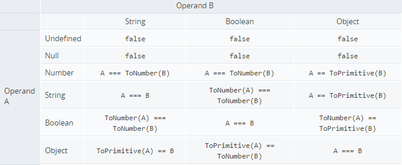

Element Object: children and childNodes Properties
The children of elements may be accesed by using the Element object.
The property "children" and "childNodes" both return an array of the
children within the calling element, they do however return
different contents.
The property "childNodes" return a list of all the children held
within an element. This includes text that is not within tags,
white space between tags and comments.
On the other hand "children" returns a list of only the children
defined by tags.
-
<div id="a">
<!--comment-->
text in a
<div id="b">
text in b
</div>
<div id="c">
text in c
</div>
</div>
<script>
var a = document.getElementById("a");
console.log(a.children.length);
console.log(a.childNodes.length);
</script>
//=>2
//7
w3schools: The HTML DOM Element Object
w3schools: HTML DOM childNodes Property
w3schools: HTML DOM children Property
Manipulate HTML Content
A HTMl document may be manipulated using Javascript. Using the Document object and Element object the web page can be altered.
-
The Text within elements can be changed using the property "innerHTML".
The string "innerHTML" points to will by displayed on screen.
-
var paragraph = document.getElementById("001");
paragraph.innerHTML = "New text written here";
My id is 001
-
The Document object provides access to the methods "createElement"
"createTextNode", which are used to build new elements. The elements
can be added to the site by using the method "appendChild" on the
desired target (in this case the body tag). The "appendChild" method
places the given parameter between the tags of the target element (At
the end of the element).
Elements that are added with "appendChild" appear at the very end of the calling element.
-
var span = document.getElementById("002");
var newElement = document.createElement("p");
var newText = document.createTextNode("Brand new text");
newElement.appendChild(newText);
span.appendChild(newElement);
My id is 002
-
In the previous example the innerHTML property could have been used to set the text value of the new paragraph element. Where innerHTML will completely alter the text held by an element appending a text node to an element will add to the current text.
-
var span = document.getElementById("002");
var newText = document.createTextNode(". My Id is also 003");
span.appendChild(newText);
My id is 003 -
Elements can also be removed from the web page using the method "removeChild". The element to be removed must be provided as a parameter and also be a child to the element calling the method.
-
var span = document.getElementById("004");
var element = document.getElementById("004-1");
span.removeChild(element);
My id is 004
My id is 004-1 and I am a child of 004 -
Elements may also be replace. The method "replaceChild" removes a child of the calling element and inserts a different element. It takes two parameters, the first is the element to insert and the second is the element to remove.
-
var span = document.getElementById("005");
var child = span.children[1];
var img = document.createElement("img");
img.src = "../images/puppy.jpg";
span.replaceChild(img, child);
when accessing the child element of the span an index of 1 is given as there is a <br> tag prior to the element to be replaced.
My id is 005
My id is 005-1 and I am a child of 005 -
As seen in the previous example elements attributes may also be editted. Attributes are held by Element objects as properties and can be accessed by using "element.attribute". The methods "setAttribute" and "getAttribute" will also perform the same task. To set the attribute using a method two parameters are required. Both should be strings, the first represents the attribute name and the second represents the value to set.
-
var img = document.getElementById("006");
img.src = "../images/puppy.jpg";
or
var img = document.getElementById("006");
img.setAttribute("src", "../images/puppy.jpg");
-
Style can be modifed as well. Style is accessable via Element objects and contains an number of edittable CSS related properties.
-
var span = document.getElementById("007");
span.style.color = "red";
My id is 007
Comparison Operators
- Abstract Equality Operator ( == / != )
-
Compares two values after performing type conversions. The two
operators return opposite values, where == equates to true !=
equates to false.
console.log(2 == 2);
console.log(2 == "2");
console.log("" == 0);
console.log(false == "0");
console.log(false == "false");
//=>true
//true
//true
//true
//false
The following tables shows how the abstract comparator performs type conversions.
 Source of tables - Strict Equality Operator ( === / !== )
-
Compares two values and their types. The two operators return
opposite values, where === equates to true !== equates to false.
console.log(2 === 2);
console.log(2 === "2");
console.log("" === 0);
console.log(false === "0");
console.log(false === "false");
//=>true
//false
//false
//false
//false
(Sources:
Stackoverflow: Which equals operator (== vs ===) should be used in JavaScript
comparisons?
w3schools: JavaScript Comparison and Logical Operators
Mozilla Developer Network: Equality comparisons and sameness)
Useful String Methods
-
"string".indexOf(String) / "string".search(String or regexr)
: These two methods locate the given parameter in the
calling sting object and return the first index at which it occurs.
While both methods accept a string as a parameter the search method
may also use a regular expression.
-
console.log("string".indexOf("ring"));
console.log("string".search("ring"));
console.log("string".search(/r\w+/i));
//=>2
//2
//2 -
"string".substring(startIndex, endIndex) /
"string".slice(startIndex, endIndex) /
"string".substr(startIndex, length) :
These methods are used to extract part of a string from within the calling string and return the result.
The method substring accepts one or two positive integer values. If one is given the return string will contain the char at the given position and all chars after. If two are given the string will contain the char at the position of the first parameter and all chars up to (but not including) the second parameter.
-
console.log("string".substring(2));
console.log("string".substring(2, 4));
//=>ring
//ri
The method slice works in exactly the same way as substring. The only difference is that the parameters can be negative. A negative value work back from the last char in the string, as the numbers become smaller the selected char will be closer to the start of the string.
-
console.log("string".slice(2));
console.log("string".slice(2, 4));
console.log("string".slice(2, -1));
//=>ring
//ri
//rin
The method substr accepts one or two parameters. It works the same way substring works except that if two parameters are given the second defines the length of the returned string.
-
console.log("string".substr(2));
console.log("string".substr(2, 2));
//=>ring
//ri
-
"string".replace(stringToLocate, stringToInsert) /
"string".replace(regexrPattern, stringToInsert) :
The method replace locates the instance of the first parameter in the calling string, removes it and inserts the second parameter into the string where the first was removed from. The resultant string is returned. The first parameter can be a string or a regular expression. -
"string".charAt(index)
:
The method charAt returns the char at the given index. This method should be used rather than accessing a string as an array as this does not work in all browsers.
-
console.log("string".replace("tr", "ing"));
console.log("string".replace(/tr/, "ing"));
//=>singing
//singing
-
console.log("string".charAt(2));
//=>r
Other methods that are avalible to strings can be found at
w3schools: JavaScript String Reference
(Sources:
w3schools: JavaScript String Methods
w3schools: JavaScript Regular Expressions
)
HTML Events
HTML DOM events allow Javascript to register event handlers to html
elements. This is done by including the event type inside the tag
of the html element and providing Javascript, which should take place
when the event occurs (commonly a function). The Javascript that is to
be executed should be included in the html document or the file where
the code resides should be linked to the documents via a script tag.
<span id="on-click-event-example" onClick="setTextToRandomWord()">
Click me to run the function
</span>
View the code for the example.
HTML events may also be applied to elements using javascript.
var x = document.getElementsByTagName("p")[0];
x.addEventListener("click", function(){
alert("Hello");
});
There are a large number of possible events that may be used. For a
list of possible events view the provided sources. For a list of event
types that can be applied programically and the parameters to provide
view
event reference
(Sources:
w3schools: HTML DOM Events
Mozilla developer network: Event reference)
BOM - History
The History objects is an array of URL's visited by the user.
The following shows a number of uses of the Navigator object.
- history.go(int) : This method moves to a page in the history array relative to the current page. If -1 is given as a parameter the previous page will be loaded whereas -2 would load the page that was 2 pages prior to the current one. Positive numbers load the pages that are ahead of the current one in the array. Zero will reload the current page.
- history.back() : Loads the previous page in the history array
- histor.forward() : Loads the next page in the history array
For more on the History object view
Mozilla Developer Network: History
(Sources:
W3schools: JavaScript Window History
Mozilla Developer Network: History
)
BOM - Location (URL)
Location represents the URL of the current page and can be used to
access the URL or details regarding the URL. This object may be
accessed via the window or the document objects.
The following shows a number of uses of the Navigator object.
- location.href : Returns a string which represents the current URL.
- location.hostname : Returns a string which represents the domain name of the current page.
- location.pathname : Returns a string which represents the file path of the html document.
- location.protocol : Returns a string which represents the web protocol of the page.
- location.assign("URL") : Loads the page at the given URL in the current window.
- location.replace("URL") : Loads the page at the given URL in the current window. The previous page will not be stored in the session history.
- location.reload(boolean) : Reload the current page. If the parameter is true the page will be reloaded from the server. If false the page may be loaded from cache.
For more on the Location object view
Mozilla Developer Network: Location
(Sources:
W3schools: JavaScript Window Location
Mozilla Developer Network: Location
)
BOM - Navigator
The Navigator object is used to find details about the brower that
is currently in use.
A number of varables which the Navigator object provides access to
are depreciated and will provide misleading information.
appName, appCodeName, product, appVersion userAgent and possibly
others should not be used.
If the purpose of accessing the brower name is to identify is a
feature is supported it appears to be advisable to use feature
detection as an alternative.
The following shows a number of uses of the Navigator object.
- navigator.platform : Returns a string which represents the operating system that is in use. Examples of the returned string include "Win32", "FreeBSD i386", "WebTV OS", "MacIntel".
- navigator.language : Returns a string which represents the prefered language of the user.
- navigator.onLine : Returns true if the browser is online and false if it is not. In Chrome and Safari if the browser is not able to connect to a local area network or a router, it returns false. All other conditions will return true.
For more on the Navigator object view
Mozilla Developer Network: Navigator
(Sources:
W3schools: JavaScript Window Navigator
Mozilla Developer Network: Navigator
)
BOM - Screen
The Screen object provides information about the screen the browser is
been displayed on.
The following shows a number of uses of the screen object.
- screen.width and screen.height : Finds the full width or height of the users screen
- screen.availWidth and screen.availHeight : Finds the width or height of the users screen minus interface features such as taskbars.
-
screen.colorDepth and screen.pixelDepth
: Finds the color depth of the screen. The numberical value
returned represents the number of bits used to create a single
colour. Most modern screens use 24 or 32, though 16 and 8 are
possible on older devices or phones.
Pixel depth and colour depth both relate to the number of colours a screen is able to display and on modern screens provide equal values. A difference between the two only occurs on older unix machines where old X-clients allowed applications to define their own colour scheme. If this option was used then screen.colorDepth would return the colour depth of the applications and screen.pixelDepth would return the colour depth of the screen. - screen.orientation.type : Returns a string value which represents the orientation of the screen. The values returned are "portrait-primary", "portrait-secondary", "landscape-primary" or "landscape-secondary".
For more on the screen object view
Mozilla Developer Network: Screen
(Sources:
W3schools: JavaScript Window Screen
Javatpoint: JavaScript Screen Object
stackoverflow: Pixel Depth vs. Color Depth
quirksmode: W3C DOM Compatibility
Mozilla Developer Network: Screen
)
BOM - Document(DOM)
The document object model (DOM) is an application programming interface
that allows scripts to dynamically modify documents. The document
object is created in Javascript when a page loads. The member methods
of the object provide access to the documents elements.
this object is a child of the window object.
There are a few DOM's in existence, each of which is used
in different ways.
The W3C DOM is the most common and is supported by almost all modern
browsers. The Legacy DOM is an old model and is supported by all
browser, though it only provides limited access to the HTML document.
The IE4 DOM was used by version 4 of internet explorer. Later versions
of this browser use the W3C DOM.
The following shows a number of uses of the document object.
- document.getElementById("element-id") : Returns a reference to an Element object, which can be used to manipulate the element in the documents with the given id.
- document.getElementsByTagName("tag") : Returns a reference to a HTMLCollection object containing all elements which use the given tag. Individual Element objects can be accessed using the method item(index), where zero is the first index.
- document.getElementByClassName("class") : Returns a reference to a HTMLCollection object. Individual Element objects can be accessed using the method item(index), where zero is the first index.
-
An example of a HTMLCollection in use is shown below ().
$(document).ready(function(){
$("#woof-button").click(function(){
var x = document.getElementsByTagName("p");
for(j=0; j<(x).length; j++){
x.item(j).innerHTML = "Woof!"
}
});
});
For more on the document object view
Mozilla Developer Network: Document
(Sources:
W3C Architecture domain: Document Object Model (DOM)
W3schools: JavaScript HTML DOM Document
tutorialspoint: JavaScript - Document Object Model or DOM
Javatpoint: Document Object Model
Mozilla Developer Network: Document
)
BOM - Window
The window object represents the window in the browser. A Javascript
object is created automatically by the browser. All objects,
functions and variables with a global scope become members of the
window object.
For example:
var bacon = "bacon"
function print(item){
console.log("I like " + item);
}
console.log(window.print(window.bacon));
//=> I like bacon
The methods and properties related to the window object may be called
using "window.print()" however the prefix window is not required.
Calling "print()" would produce the same results (unless the window you
wish to influence is not the current one).
The window object provides access to a number of useful properties and
methods to enable the managment of a browser window. These include:
- innerWidth and innerHeight : These return the width and height of the window, which equates to the browser size minus the toolbars and scroll bars.
- outerWidth and outerHeight : These return the width and height of the entire browser, including the toolbars and scroll bars.
- open() / open("url") : This method opens a new tab. If it is given no parameters it will open a blank web page. If a url is given it will open the site at that location in a new window (pop up blockers may hinder this process). The method also returns the new widow object, which may be stored in a variable.
- close() : This closes the current window. In Firefox and Chrome (and most likely other browsers) this method will only work when called from the Javascript file that initally opened the target window.
- setTimeout(function, delay-in-miliseconds) : This will run the code in provided by the fuction after the given number of miliseconds have passed.
For more on the window object view Mozilla Developer Network: Window
(Sources:w3schools: JavaScript Window - The Browser Object Model
Javatpoint: Window Object
Mozilla Developer Network: Window )
Browser Object Model
The Browser Object Model consists of all the objects exposed by a web
browser which define how a everything should be displayed. These
objects can be accessed using Javascript in order to interact with
the browser. While there is no standard implementation for the BOM (
meaning browser vendors are free to implement the BOM in any way) most
modern browsers have implemented a large number of similar methods
and properties for Javascript.
BOM objects include.
- Window
- Document
- History
- Screen
- Navigator
- Location
Window is the parent to all the other objects
(Sources:
Javatpoint: Browser Object Model
Wikipedia: Browser Object Model
Stackoverflow: What is the DOM and BOM in JavaScript?
)
Functions
Functions are objects which excecute the code that is provided when called.
- This is the general way a function is declared
-
function functionName(parameters){
code to run
} - Functions may be stored in variables and passed as parameters.
-
var x = function runOtherFunction(func){
func();
}
var y = function printHello(){
console.log("Hello");
}
x(y);
//=>Hello - Not all parameters defined on function creation have to be used when calling a function. However any parameters that are not used will be set to undefined and should be handled or set to a default value to avoid errors.
-
function toLog(a,b,c,d){
console.log(a+ " | " +b+ " | " +c+ " | " +d);
}
toLog(2,2);
//=>2 | 2 | undefined | undefined - Functions create an array of the parameters provided to them. The name of the array is arguments and is accessed in the same way as any other array. Using this allows access to non defined parameters.
-
function plus(){
var sum = 0;
for( j in arguments ){
sum += arguments[j];
}
return sum;
}
console.log(plus(2,2));
//=>4 - Functions can be nested within other functions. A nested functions scope extends only to the function it was created in.
-
function func(){
function nestedFunc(){return "Hello";}
return nestedFunc();
}
console.log(func());
//=>Hello - While most functions are created and called at another point in time it is possible to create self calling functions, which run when they are created.
-
(function(){
console.log("Running");
})();
//=>Running -
By combining the previous two ideas a Javascript closure can be
created. This is a function which has access to the parent scope
after the parent function has closed, which can be used to simulate
private variables.
In the following example var x is assigned the return value of a self calling function. When the self calling function runs it defines the variable count and retrurns a funtion that increments count by one. The variable x holds the incrementing function, which is the only access the count variable.
-
var x = (function(){
var count = 0;
return function(){return count ++;}
})();
console.log(x());
console.log(x());
console.log(x());
//=>1
//2
//3
Custom Objects
There are three ways to create objects in javascript.
- Using an object literal
- By creating an instance of Object
- By using a constructor function / a prototype.
var x = {
name:"Paul",
age:32,
height:"180cm"
};
console.log(x.name);
console.log(x.age);
console.log(x.height);
//=>Paul
//32
//180cm
var x = new Object();
x.name = "Paul";
x.age = 32;
x.height = "180cm";
console.log(x.name);
console.log(x.age);
console.log(x.height);
//=>Paul
//32
//180cm
The constructor function is a prototype for the object that
will be created from it
function Person(name, age, height){
this.name = name;
this.age = age;
this.height = height;
}
var x = new Person("Paul", 32, "180cm");
console.log(x.name);
console.log(x.age);
console.log(x.height);
//=>Paul
//32
//180cm
Object properties can be added or deleted after an object has been
created.
var x = {};
x.name = "Paul";
x.age = 20;
console.log(x);
delete x.age;
console.log(x);
//=>Object {name: "Paul", age: 20}
//Object {name: "Paul"}
Objects are able to call methods that are associated with them. The
following shows a few methods of creating and assigning methods to
objects.
var x = {
name:"Paul",
getName : function(){
return this.name;
}
}
console.log(x.getName());
var y = new Object();
y.name = "Paul"
y.getName = function(){
return this.name;
}
console.log(y.getName());
function Person(name){
this.name = name;
this.getName = function(){
return this.name;
}
}
var z = new Person("Paul");
console.log(z.getName());
//=>Paul
//Paul
//Paul
(Sources:
Javatpoint: JavaScript Objects
Javatpoint: JavaScript Object Prototypes
Javatpoint: JavaScript Object Methods)
When To Use var (Implied Global Variables)
The keyword var should always be used when declaring a variable. If it
is omitted (and the variable has not been declared anywhere else)
Javascript will search through each level of scope until a declaration
is found. If it does not locate one the variable is given a global
scope.
Example 1
function varTest(){
x = "global variable"
}
varTest();
console.log(x);
//=> global variable
Example 2
function varTest(){
var x = "local to method"
}
varTest();
console.log(x);
//=> Uncaught ReferenceError: x is not defined
at test-jscript.js:7
Also take care when chaining variable declarations as this will result
in the accidental creation of implied global variables.
function varTest(){
var x = y = "local and global"
}
varTest();
console.log(y);
console.log(x);
//=> local and global
//Uncaught ReferenceError: x is not defined
at test-jscript.js:7
In most cases var should be included with the inital use of a variable
to avoid the accidental creation of global variables. It should be
noted however that variable may be hoisted,
which means they are declared using var later in the code. It is
usually best to declare variables prior to their use.
(Sources:
Mozilla Developer Network: Var
Medium: Implied globals everywhere
ProgrammerInterview: When should you use the var keyword in Javascript? How does the var keyword work?
)